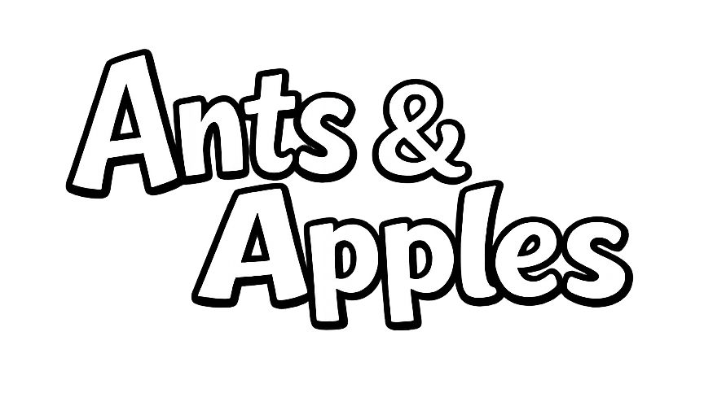
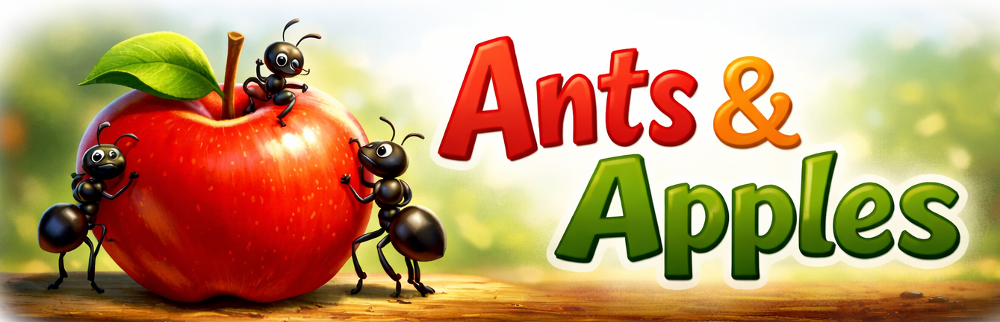
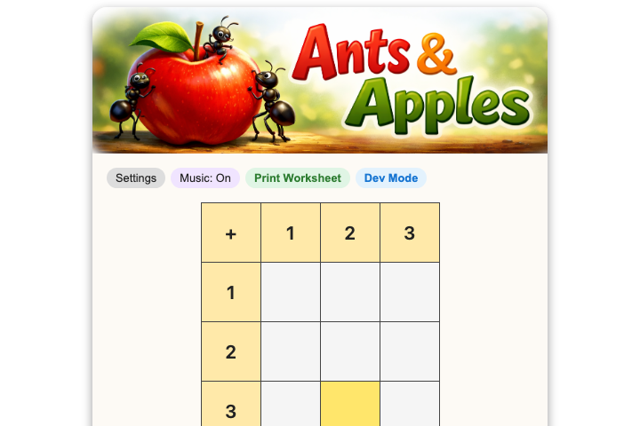
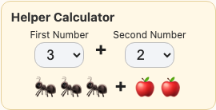
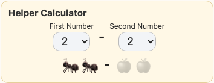
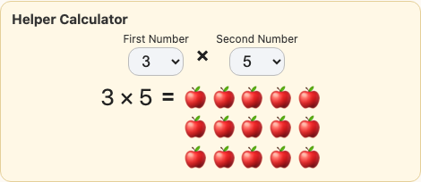
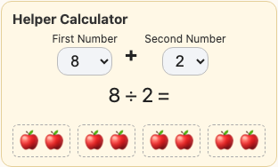
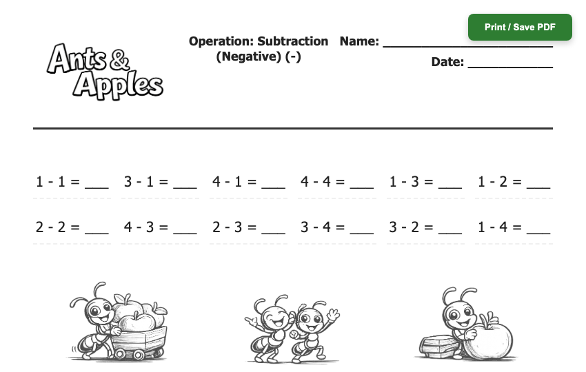
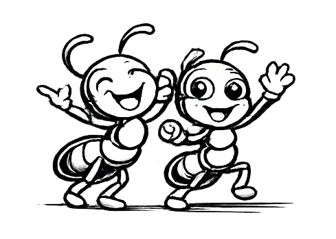

A short pitch for parents and teachers.
Most educational apps want more time on the screen — more levels, more streaks, more notifications pulling a child back in. That's not how kids actually get good at math.
Real fluency comes from working problems, by hand, over and over, until the answer stops being a calculation and becomes a fact.
Ants & Apples draws a clean line: the app is for learning a concept and checking where a child stands — not for hours of drilling. Every session is designed to end with something to do away from the screen.
The game is a grid — column headers across the top, row headers down the side. One square lights up: that's the problem. Row 3, column 2 means 3 + 2.
Just scanning the grid to find the highlighted square gets a child rehearsing rows and columns before they ever tap a key. The grid grows with them, from 3×3 all the way up to 9×9.

Every problem has a built-in visual helper — real ants, real apples, right on screen. A child who doesn't know 3 + 2 can press Esc and simply count three ants and two apples. No penalty, no waiting on a parent.
As they get faster, they turn the helper off and play in Master Mode — same grid, same problems, no crutch. Nobody forces that switch. It feels like leveling up.

Once a grid is mastered, the ladder continues — and every rung gets its own visual helper, scaled to the concept.



Addition → Subtraction → Subtraction with negatives → Multiplication → Division.
Print Worksheet takes the grid, operation, and difficulty a child is playing right now and turns it into a clean, ready-to-print page — no searching for "3rd grade subtraction worksheets" online, no guessing if it's the right level.
That's the whole point of the app: it isn't where the studying happens. It's where the studying gets assigned.

A progress meter, so a parent or teacher can see at a glance exactly where a child stands — and which worksheet to print next.
An expanding ladder: fractions, algebra, and multi-step "math chains" are already in testing.
A built-in respite system: a gentle break prompt when a child has been on the screen too long (liftable for a long trip, but never left on as a permanent setting), and a slow-down prompt when they're missing problems again and again — before frustration sets in.
Roadmap items — not shipped yet, but the direction is set.

Made for curious kids — and the ants who love them.
Play Ants & Apples